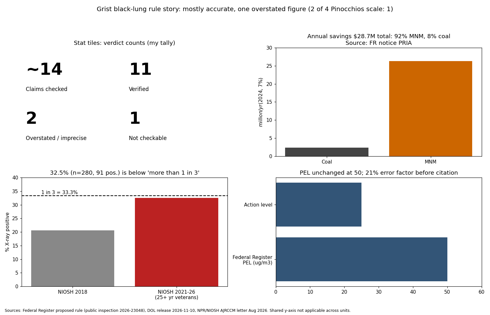

Mostly accurate (1 Pinocchio): rule figures check out; "more than 1 in 3" is overstated

Summary of findings
Nearly every rule claim matches the Federal Register proposal. The main error: NIOSH found 32.5% (91 of 280) positive among working underground veterans with 25+ years in central Appalachia, which is not "more than 1 in 3" and is not all miners.
- Verified: PEL stays 50 µg/m³; 21% error factor; savings $28.7M/yr (2024$, 7%), coal $2.43M; "deregulatory action" language; hearing Dec 15, 2026; comments due Jan 11, 2027.
- Misleading emphasis: 92% of savings ($26.3M) is metal/nonmetal; the voluntary baseline exam is for new MNM miners, while the story is about coal black lung.
- "Nearly 50 years" (NIOSH) became "50-year high".
- Not checkable: miner Robinson's personal account; advocate opinion ("effectively nullify"). Caveat: article text was obtained only as a tool summary.
- Would change the grade: verbatim article wording differing from the summary.
Step: rule claims
Answer: verified. Key values: as above. Sources: Federal Register notice. Confidence: high, primary text.
Step: black lung prevalence
Answer: 32.5% vs 20.6% in 2018; slightly overstated. Sources: NPR on NIOSH letter. Confidence: medium, secondary reporting.
Sources